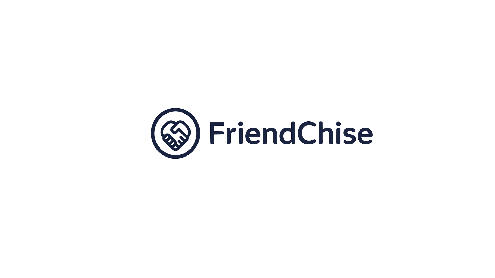

Inspired by real inefficiencies observed at Walker's Donuts — a multi-tenant task management platform for franchise and multi-location businesses that need consistency. Restaurants, cafés, retail chains, and service franchises use timetable scheduling, reusable templates, and role-based access control to maintain operational standards. Future roadmap includes a knowledge-sharing hub. Deployed and live on Vercel.
Franchise businesses — especially food franchises like donut shops — struggle with consistency, knowledge sharing, and task execution across locations. Task planning relies on paper checklists, generic apps, and group chats. Recipes are scattered on 50+ sheets of paper with no way to search or share improvements. Training depends on whoever happens to be available, and not everyone is a good teacher.
| Problem | Impact |
|---|---|
| Uneven task distribution | Burnout, breakdowns during 12-hour shifts, workers overloaded while others never learn key tasks |
| Poor / no training | Workers feel clueless for months. Managers blame workers when the real issue is lack of structure |
| Knowledge stays trapped | Better methods exist at other locations but no one ever finds out |
| Recipes are inconsistent | Different locations make things differently — quality varies, customers notice |
| New franchisees make avoidable mistakes | Bad habits from day one — can ruin reputation before the business even starts |
| Conflict between franchisor & franchisee | Struggling franchisees don't trust top-down advice. They trust living proof more |
| Mass hiring with no structure | Ridiculously high expenses at launch with no return — most hires aren't set up to succeed |
I worked at a donut franchise that started as a top 5 location out of 30. Within time, it dropped to bottom 2. I saw firsthand why:
Workers were thrown in without proper training — including myself. 12-hour shifts with unfair task distribution led to burnout and breakdowns. Managers blamed workers for underperforming, when the real issue was a lack of training and structure. Mass hiring at launch led to ridiculously high expenses with no return because most hires weren't set up to succeed. Customer complaints were ignored or mishandled because workers simply didn't know how to respond. Recipes were on scattered papers — no way to search, organize, or learn better methods from others.
The problems weren't the people — it was the system. There was no structure, no knowledge sharing, and no consistency. FriendChise is the tool I wish existed.
A web app where franchise owners define task libraries and timetable templates at the franchise level, managers apply those templates to generate weekly schedules for their branch, and workers view their assigned tasks on any device.
Everything is scoped by organization with role-based permissions. Parent brands define defaults; child franchisees inherit and customize. An invite system with accept/decline flow handles onboarding, and a notification panel keeps everyone informed. Future versions will add a knowledge-sharing hub where franchise communities can document procedures, share tips, and improve methods through comments and upvotes.
These features are deployed and functional at friend-chise.vercel.app:
App Router with RSC, TypeScript, Server Actions
Relational database hosted on Supabase
Type-safe ORM with schema migrations
Google OAuth with JWT sessions
Utility-first styling with shadcn/ui
Runtime schema validation
Fast, disk-efficient package manager
AI-powered code review on PRs
Production deployment with auto-deploy on push
Auth.js v5 — OAuth with JWT strategy, httpOnly cookies
Edge middleware — Route protection without DB access
Service Layer — Shared logic between API routes and Server Actions
Discriminated Unions — Type-safe error handling
Feature branching — PRs to main
CodeRabbit — Automated AI code review on each PR
Component layouts and page structures were designed in Figma before implementation. Wireframes cover the timetable views, task management, member management, settings panels, and mobile responsive layouts.
14 Prisma models across PostgreSQL (Supabase) covering users, organizations, memberships, roles, permissions, tasks, timetable entries, templates, template entries, notifications, and franchise relationships.
Age 52 · Brand Owner · 30+ locations
Built his donut brand from scratch 15 years ago. Knows the business inside out but can't be everywhere at once. Wants to maintain consistent quality, share official procedures, and identify struggling franchisees early.
Frustration: Some locations are damaging the brand reputation. He shares advice but franchisees don't always trust top-down instructions.
Age 29 · First-time Owner · Just hired 8 workers
Invested her savings into her first franchise. No food industry experience. Overwhelmed — flipping through 50+ paper recipes, doesn't know what tasks to prioritize. Terrified of failing before she even starts.
How FriendChise helps: Inherits Frank's default tasks automatically. Watches video tutorials on each task. Timetable templates structure her entire week from day one.
Age 41 · Declining Location · 2 years in
Started strong but has been declining steadily. Losing customers, workers burning out. Doesn't trust top-down advice from the franchisor — feels disconnected from his reality. Feels isolated.
How FriendChise helps: Compares his task times to successful locations. Gets peer feedback from franchisees going through similar challenges.
Age 35 · Top 5 for 3 years · Wants to help others
Figured out efficient systems, happy workers, customers love her store. Has great methods but no platform to share them. Helping other locations in person is expensive and time-consuming.
How FriendChise helps: Posts videos, tips, and comments under tasks. Shares her cycle setup. Upvote system recognizes her contributions.
Age 22 · First job · Hired at Nina's location
Showed up on day one and nobody told him what to do. Eager to learn but feels lost and anxious. Cleaned the ice cream machine 4 times this week while others never touched it.
How FriendChise helps: Sees daily tasks clearly on his phone with role-based visibility. Clicks any task for step-by-step instructions and videos.
Age 27 · 3 years experience · Derek's location
Knows every task inside out, trains most new hires, and is the go-to person when things go wrong. Stretched thin — basically running the floor while expected to teach everyone. Manually creates the schedule and it's never fair enough.
How FriendChise helps: Timetable templates take pressure off manual scheduling. New workers self-learn through task videos. His tips live on even when he's not on shift.
Age 38 · Former top-performer · Travels between locations
Hired by the franchisor to audit operations and help struggling franchisees. Franchisees see him as a spy, not a helper. Got into heated arguments. Locations hide problems when he visits. Stressed and burnt out.
How FriendChise helps: Views performance data remotely. Points franchisees to community-proven posts instead of arguing his own opinion. The data speaks for itself.
As a new franchisee, I want to see video tutorials attached to each task so that I can learn how to do things properly without relying on someone to teach me in person.
As a new franchisee, I want to see major warnings and key points on each task so that I know what to watch out for before I start.
As a new franchisee, I want to inherit the franchisor's default tasks automatically so that I have a structured starting point from day one.
As a struggling franchisee, I want to see how top-performing locations handle the same tasks so that I can identify what I'm doing wrong.
As a struggling franchisee, I want to compare task durations — expected vs actual — so that I can spot inefficiencies.
As a struggling franchisee, I want to see factors that contribute to success so that I know what to focus on improving.
As a struggling franchisee, I want feedback from other franchisees, not just the franchisor, so that I can learn from people going through the same challenges.
As a worker, I want to see my assigned tasks for the week in a clear schedule so that I know exactly what I'm responsible for each day.
As a worker, I want to search for recipes quickly so that I don't have to dig through piles of paper.
As a worker, I want tasks to be evenly distributed so that I'm not burnt out doing more than everyone else.
As a worker, I want a checklist or standard for each task so that the person before me doesn't leave a mess for me to clean up.
As a new worker, I want to see exactly what tasks I need to do today so that I'm not confused on my first day.
As a new worker, I want to see what a full week of work looks like so that I can mentally prepare and feel confident.
As a new worker, I want to be eased into tasks gradually so that I can learn at a steady pace without being overwhelmed.
As a new worker, I want step-by-step details on how to execute each task so that I build good habits from the start.
As a franchisor, I want to flag posts as urgent or official so that franchisees know which procedures are mandatory.
As a franchisor, I want to create a default set of tasks that all franchisees must follow so that every location maintains the same standard.
As a franchisor, I want to discover better methods from franchisees and share them across all locations.
As a franchisor, I want to share recipes with role-based permissions so that only authorized people can view secret recipes.
As a franchisor, I want to see the performance/status of each franchisee so that I can identify who needs help.
As a succeeding franchisee, I want to share my knowledge and methods so that the overall franchise reputation improves.
As a succeeding franchisee, I want to be rewarded for contributing so that I'm motivated to keep sharing.
As a succeeding franchisee, I want to share my task cycle setup so that others can learn from my scheduling approach.
As a franchise member, I want to post tips, videos, and comments under any task or recipe so that I can share my knowledge — based on my permission role.
As a franchise member, I want to upvote/downvote posts so that the best methods naturally rise to the top.
As a franchise member, I want to search the forum so that I can quickly find information on a specific topic.
As a manager, I want to manually adjust the task cycle if needed so that I can handle edge cases like someone calling in sick.
As a manager, I want to auto-generate an optimal task cycle when I'm unsure how to distribute tasks.
As a manager, I want to see which tasks have been completed so that I can track progress and hold workers accountable.
As a franchisee owner, I want to create custom ranks with custom names (e.g., “Head Baker”, “Shift Lead”).
As a franchisee owner, I want to assign permissions to each rank so that I control who can do what.
As a franchisee owner, I want two default ranks — Worker and Owner — so that new members are assigned the basic role automatically.
As someone with a management permission, I want to assign and manage permission roles for others so I can delegate.
As a worker, I want to check off tasks on my phone as I complete them so that everyone knows what's done.
Auto-distributes tasks evenly across workers. Supports multi-person tasks, customizable per location. 4 workers + 1 task every 2 days = 8-day cycle where everyone does it once. Scales across many tasks with different frequencies and qualifications.
Custom ranks with assignable permissions. Two defaults: Worker and Owner. Management role holders can assign permissions to others. Each role represents specific actions.
Franchisor defines default tasks all franchisees inherit. Franchisees can add their own local tasks on top. Like OOP abstraction — inherited but customizable.
Every task and recipe is also a forum topic. Click a task to see posts, videos, and tips from other franchisees. Comments and upvotes/downvotes surface the best methods.
Assigned tasks visible on any device. Filter the overall mixed timetable to "My Tasks Today." Calendar (week/day) and simple list modes.
Searchable, role-based access. Some recipes locked to specific roles (e.g., only chefs see secret recipes). Each recipe is also a forum post.
Exclude/add tasks based on equipment (no oven = no baking). Adjust frequency within franchisor-set min/max bounds. Anyone with management permission can modify.
Workers press "Done" to mark completion. Status flow: TODO → IN_PROGRESS → DONE / SKIPPED. Trust-based for v1.
On tasks and posts. Workers might self-learn by watching videos. New workers can prep at home. Saves money on teaching and time.
On posts and comments. Best methods naturally rise to the top. The community reinforces quality without top-down enforcement.
Task completion rates, cycle data, activity metrics. For franchisor and auditor roles. Lets Rico-type auditors see real problems before site visits.
Cycle algorithm eases new workers into tasks slowly. They learn each task at a steady pace instead of being overwhelmed on day one.
Grab data on demographics of each franchisee area. If your area has average age 50, recommend posts from successful franchisees with similar demographics. Like Netflix but for franchise knowledge.
Auto-detect posts with potential legal, health, or safety violations. Example: "Cut veggies and meat on the same board" → flag as cross-contamination risk.
Succeeding franchisees share their entire cycle setup for others to learn from. Seasonal chaining — multiple cycles combined for different seasons.
Monthly best post, top contributor badges. Incentivize sharing. Create opportunities for franchisees to create new recipes.
Parent org (brand) → Child org (franchisee) via one-time invite links. A single user can belong to multiple orgs. UI has an org dropdown listing every org the user is a member of.
| Org Type | Description |
|---|---|
| Independent | Created normally. Full settings, full control. No parent. |
| Parent (Brand) | Can issue franchisee creation links. Defines default tasks/recipes/roles. Can view child orgs. Also functions as a normal store with its own workers and timetable. |
| Child (Franchisee) | Created only via invite link. Inherits published tasks/recipes/roles from parent. Can create own local tasks, manage own members and timetable. |
Brand owner generates a one-time token link that expires in minutes and can only be used once. New franchisee pastes the token when creating their org → system validates → creates child org with parent reference → adds creator as Owner.
Layer 1 — Template / Cycle Profile (pattern definition): A named cycle profile (e.g., "Standard Week" with 7 days). Task placements stored as TaskInstance rows with relative dayOffset and startTimeMin. No real dates — purely positional.
Layer 2 — Materialised Schedule (real calendar): When a manager selects a template, the system calculates real dates (weekStartDate + dayOffset) and creates new TaskInstance rows with absolute scheduledStartAt / scheduledEndAt. These show up on the calendar.
Each task has two recurrence variables:
| Min | Max | Meaning |
|---|---|---|
| 0 | 1 | Do it every day |
| 1 | 2 | Do it every 1–2 days (flexible) |
| 2 | 7 | At least once a week, no sooner than every 2 days |
Franchisees can shorten the frequency but cannot exceed the max set by the franchisor. The cycle algorithm uses these constraints along with worker count and task qualifications to generate fair schedules.
| Action | Owner | Manager | Worker |
|---|---|---|---|
| Create/delete organization | ✓ | — | — |
| Manage members (invite/remove/change role) | ✓ | — | — |
| Create/manage custom ranks | ✓ | — | — |
| Create/edit/delete task templates | ✓ | ✓ | — |
| Create/edit timetable templates | ✓ | ✓ | — |
| Apply template to a week (materialise) | ✓ | ✓ | — |
| Edit materialised instances (reassign) | ✓ | ✓ | — |
| Assign members to task instances | ✓ | ✓ | — |
| View timetable (full week) | ✓ | ✓ | — |
| View own daily tasks | ✓ | ✓ | ✓ |
| Update task status (TODO/IN_PROGRESS/DONE/SKIPPED) | ✓ | ✓ | ✓ (own) |
| View all org members | ✓ | ✓ | ✓ (read) |
| Create local tasks/recipes | ✓ | ✓ | — |
| Post in forum | ✓ | ✓ | Role-dependent |
| View secret recipes | ✓ | Role-dep. | Role-dep. |
Permission enum values: ORG_MANAGE, ROLE_MANAGE, TASK_CREATE, TASK_UPDATE, TASK_DELETE, TASK_ASSIGN, TASKINSTANCE_COMPLETE
Chose: Materialised scheduling. When a template is applied, real TaskInstance rows are generated with absolute dates. This allows per-instance overrides (reassign, reschedule, status changes) without a complex exception layer. Virtual projection can't support this cleanly and would show misleading data after template edits.
Chose: One table for now. Template placements have templateId + dayOffset + startTimeMin. Materialised instances have scheduledStartAt + scheduledEndAt. Distinguished by which fields are populated. Reduces schema complexity for v1. Clean refactor path to split later if needed.
Next.js middleware runs on the Edge runtime, which can't import @prisma/client. Auth config split into auth.config.ts (Edge-compatible, no Prisma) and auth.ts (full config with Prisma adapter). A real production pattern.
Both Server Actions (web UI) and API Routes (external/mobile) are thin wrappers that delegate to lib/services/. No duplicated business logic. Server Actions additionally call revalidatePath to invalidate the Next.js cache.
Auth helpers return { ok: true, user, membership } or { ok: false, response: 401|403 }. Routes early-return with if (!authz.ok) return authz.response — clean, consistent, no exceptions for control flow.
Tasks are NOT copied into child orgs. Each canonical task has one shared forum thread that all brand-network franchisees can comment under. Avoids data duplication, centralizes community knowledge, and updates propagate automatically.
Key models in the PostgreSQL schema:
parentOrgId for brand→franchisee hierarchy. Has openTimeMin, closeTimeMin, timezone.OrgPermission enum values.templateDays count and optional effectiveFrom.dayOffset) OR materialised entries (absolute scheduledStartAt). Status: TODO → IN_PROGRESS → DONE / SKIPPED.?status= filteringStarted with a real problem. Defined 7 personas with distinct needs. Wrote 34 user stories. Prioritized 36 features using MoSCoW. Designed 9 user flows and full information architecture before writing code.
Hierarchical multi-tenant architecture (Platform → Brand → Franchisee). Two-layer timetable system with documented tradeoffs. Task frequency system with min/max constraints. Parent/child inheritance model.
Next.js 16 App Router, RSC + client components, Server Actions, REST API. End-to-end type safety with Zod validation and discriminated union result types.
14 Prisma models with multi-tenant data isolation. Complex relationships (many-to-many with metadata). Dual-purpose table design with clear refactor path.
OAuth with JWT sessions, Edge runtime compatibility, org-scoped permission checks on every route. Full RBAC — not just "admin vs user."
Service layer pattern, feature branching with PRs, CodeRabbit AI code review. Auth config split for Edge compatibility. Clean error handling patterns.
| Feature | Why It's Impressive |
|---|---|
| Min/Max frequency cycle algorithm | Algorithmic thinking — not just CRUD. 4 workers, task every 2 days = 8-day cycle calculated automatically |
| Parent/child task inheritance | Software architecture like OOP inheritance applied to franchise operations |
| Two-layer timetable system | System design maturity: template patterns vs materialised schedules, with documented tradeoff reasoning |
| Demographic recommendation engine | Data-driven product thinking (even as a planned feature, it shows senior-level vision) |
| AI safety flagging | Awareness of real-world compliance and responsible AI |
| Granular permission system | Security and access control design with 7 permission types and custom ranks |
| Personal problem → technical solution | Full engineer mindset: identify problem, research users, design system, build it |
A structured smoke test was conducted across 87 individual test cases covering all major features, RBAC permissions, mobile responsiveness, and edge cases. Each test was documented with pass/fail/partial status and detailed notes.
| Category | Pass | Partial | Fail | Total |
|---|---|---|---|---|
| Global Issues | 0 | 0 | 3 | 3 |
| Auth (Sign In) | 3 | 0 | 0 | 3 |
| Create Org | 2 | 1 | 2 | 5 |
| Org Settings | 4 | 0 | 1 | 5 |
| Roles | 6 | 0 | 1 | 7 |
| Tasks | 2 | 2 | 4 | 8 |
| Templates | 1 | 1 | 6 | 8 |
| Apply Template | 4 | 0 | 1 | 5 |
| Timetable | 4 | 2 | 3 | 9 |
| Invite Member | 2 | 1 | 0 | 3 |
| Accept Invite | 5 | 0 | 0 | 5 |
| RBAC (Permissions) | 6 | 0 | 2 | 8 |
| Franchise | 3 | 0 | 1 | 4 |
| Decline Invite | 3 | 0 | 0 | 3 |
| Memberships | 0 | 0 | 3 | 3 |
| Navbar | 0 | 0 | 1 | 1 |
| Notifications | 0 | 0 | 3 | 3 |
| Mobile (iPhone) | 0 | 1 | 3 | 4 |
Full test report and individual bug issues are tracked on GitHub.